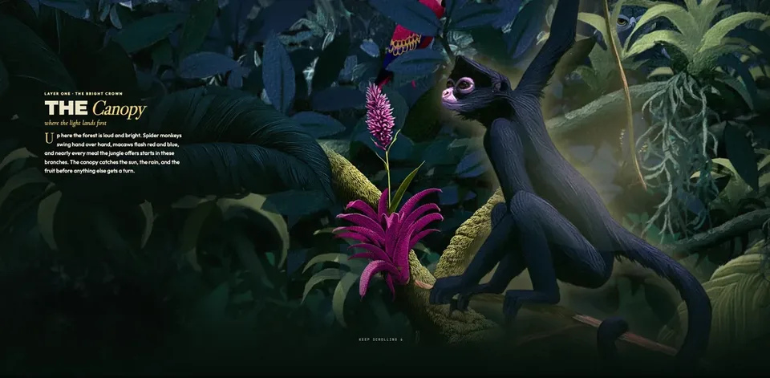

parallax + scrollytelling · interaction design
live · experiment
reading the rainforest.
Three layers of rainforest, canopy to floor, stacked into one continuous scroll. You start in the bright crown and sink to the dark floor, and the whole scene runs on a single input: how far down the page you are. No timeline, no play button. Scroll it live, in place, or open it full screen.
Thesis: Most digital learning treats scroll as a way to get from one box to the next. But scroll is motion, and motion carries feeling. Testing what that means for how people move through, and remember, an experience.
- parallax
- scrollytelling
- html / css / js
- scroll-driven
- claude code
